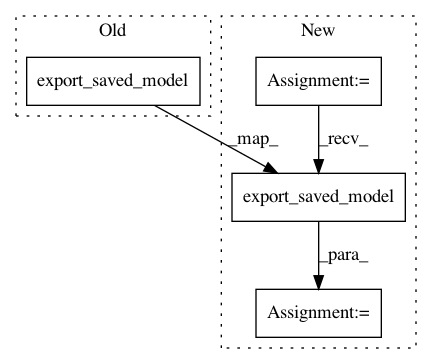

79dd023ead01a5546ef4718c3c0e292891783baf,models/official/detection/export_saved_model.py,,main,#Any#,69
Before Change
print(" - Exporting the model...")
input_type = FLAGS.input_type
image_size = [int(x) for x in FLAGS.input_image_size.split(",")]
export_path = estimator.export_saved_model(
export_dir_base=FLAGS.export_dir,
serving_input_receiver_fn=functools.partial(
serving.serving_input_fn,
batch_size=FLAGS.batch_size,
desired_image_size=image_size,
stride=(2 ** params.anchor.max_level),
input_type=input_type,
input_name=FLAGS.input_name),
checkpoint_path=FLAGS.checkpoint_path)
print(" - Done! path: %s" % export_path)
After Change
tf.logging.info("Creating base dir: %s", dir_name)
tf.gfile.MakeDirs(dir_name)
export_path = estimator.export_saved_model(
export_dir_base=dir_name,
serving_input_receiver_fn=serving_input_receiver_fn,
checkpoint_path=FLAGS.checkpoint_path)
tf.logging.info("Exported SavedModel to %s, renaming to %s", export_path,
FLAGS.export_dir)
In pattern: SUPERPATTERN
Frequency: 3
Non-data size: 4
Instances
Project Name: tensorflow/tpu
Commit Name: 79dd023ead01a5546ef4718c3c0e292891783baf
Time: 2020-03-17
Author: gardener@tensorflow.org
File Name: models/official/detection/export_saved_model.py
Class Name:
Method Name: main
Project Name: tensorflow/tpu
Commit Name: 36960578e601b73ab44b82a10960e31c05d2465f
Time: 2019-05-13
Author: solitarylord@gmail.com
File Name: models/official/retinanet/retinanet_main.py
Class Name:
Method Name: main
Project Name: tensorflow/tpu
Commit Name: e196f93939a3506db23b73a9e1342b01dcfaffff
Time: 2019-02-25
Author: jysohn@google.com
File Name: models/official/resnet/resnet_main.py
Class Name:
Method Name: main